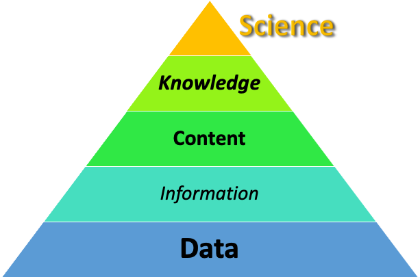

It ain’t what you don’t know that gets you into trouble. It’s what you know for sure that just ain’t so.
Misattributed to Mark Twain, this quote opens the classic movie “The Big Short”, based on Michael Lewis’ book of the same name. In my mind, it is linked to another misattributed Twain quote, the one about “lies, damned lies, and statistics”, which I traced in an early installment 1 . Observant and long-time readers will recall that that particular quote originated in an uncredited essay, found on pages 73-77 of Nature, Volume 33 (1886), titled “The Whole Duty of a Chemist”, written on the occasion of the chartering of the Royal Institute of Chemistry in London.
A well-known lawyer, now a judge, once grouped witnesses into three classes; simple liars, damned liars, and experts. He did not mean that the expert uttered things which he knew to be untrue, but that by the emphasis which he laid on certain statements, and by what has been defined as a highly cultivated faculty of evasion, the effect was actually worse than if he had.
In other words, nobody tells the whole truth. Some shade the truth unintentionally (simple or ‘white’ liars), some shade it with a self-serving purpose (damned liars), and some do so without even realizing it themselves (experts). There is a human tendency for self-deception through mental shortcuts and reliance on others’ data interpretation. The truth is not determined by any single witness. It’s found somewhere in between the perception of witnesses. Experts are perilous in particular because they know things with high certainty, including things that ‘just ain’t so’.
We all need to pay attention to experts’ opinions, so I’m not implying that the current trend of dismissing experts entirely in favor of half-baked conspiracy theories is justified 2 . But, it is essential to question whether any expert is firmly within his or her expertise and capable of defending their opinions against dissent from their peers. I can assure you that, among scientists, there’s plenty of healthy disagreement! We should also carefully distinguish scientific theories from others by connecting observation to a conclusion in a sound, logical manner. [As a historical note, it is illuminating to review the “expert” proponents of “ scientific racism ”, many of whom were Twain’s contemporaries, in light of modern sentiments and new sources of data!]
The title is also an homage to Daveed Diggs’ extraordinary film of the same name. It refers to recognizing our “blind spots” outside the limits of our perceptions. I highly recommend it as a crime drama/comedy if you want something to watch. I’ve watched it several times and have yet to fall asleep!
Naturally, as a human being, I have blind spots, too. The process of writing this series has revealed at least some of them. While we may not share the same blind spots, I thought it would be helpful to review what I’ve learned. It requires retrospection, and accurate recollection of past misconceptions, some of which may be cloudy, so I hope you’ll bear with me.
As a foundation, let me lay out a personal philosophy of Science. Over the years, I’ve found it helpful to visualize Science as a hierarchy with a (hopefully memorable but not intentionally offensive) mnemonic, DICKS.

This conceptual hierarchy separates Science, which persists because of data , from Religion, which persists based on belief alone. [By “data,” that’s not restricted to the digital world of “big data” stored in vast computer networks. Instead, I mean objective, ideally quantitative, measurements of the world around us—what we observe without filters.] This data is then refined into information that systematically relates observations or manipulations to outcomes, creating a functional, causal connection; in other words, relationships like “If I do A, then I expect B to happen.” In formal science, like we’re taught in high school, this connection is “proven” through reproducible experimentation. However, in this series's general field (climatology), experiments are impractical, so connections are established by inference, interpreting contemporary data to rule in or rule out various models of how the world works.
Information is, in turn, further refined into content by crafting a credible narration, in other words, a “theory”. The alignment of different veins of content suggests whether a particular theory is correct, in other words, whether the narration is peculiar or reveals a more general truth. It can also suggest experiments to test the theory. The content is incorporated into a storehouse of knowledge , if it can be generalized or supported by definitive experiments. These threads tie together the fabric of our scientific understanding of the absolute truth, Science . Well-supported theories, such as thermodynamics and evolution, have become so firmly established that scientists apply them as fundamental laws.
It’s worth pointing out that Einstein’s seminal insight, summarized as E=mc^2, is an exception to the First Law of Thermodynamics, or “conservation of energy”. His genius was based on incorporating this “exception” into the fabric of Science and formulating a “theory of relativity” to explain observations that did not fit previous theories.
One problem is that scientists today are easily co-opted by politically motivated ideology. There’s too much content to support any wacky idea, like diverting hurricanes with nuclear weapons or slowing them down with massive offshore wind farms. Without leaving my desk, I have the world’s libraries at my fingertips. Literally. But so does everyone with a computer connected to the Internet, which levels the playing field somewhat.
In the context of my framework, we’re at the point in human history where content availability has exploded. Too often, it’s self-serving and without factual support--there's no true information or data to put it in the domain of Science. This is what helps spread disinformation (as I covered earlier 3 ) and the vulnerability that led to Alex Jones' billion-dollar liability decided this week, years too late. Still, relying on content alone reinforces our blind spots unless we regularly question the basis of what we know 'for sure' to make sure it's not 'just ain't so'.
What I’ve attempted to do throughout this series is to dig beneath the “content” layer, the convenient narratives that scientific experts (and occasionally non-scientists) present. I think it’s important to acknowledge that, without data, Science devolves into what amounts to the belief structure of Religion and, eventually, irresolvable conflicts over divergent viewpoints. Far too often, these beliefs are communicated using the rhetoric of ad hominem attacks (criticizing the character of the source) and insinuation (the juxtaposition of facts without causal evidence) on both sides of the argument. It’s essential to strip away these flourishes where possible and provide the tools for rational decisions.
If you think that it’s only “the other side” that uses these tools, you’re missing the point. That’s your blind spot.
Finally, one possibly controversial statement that fits this philosophy:
Environmentalism is Religion, not Science.
It’s the same form as ‘Buddhism’ and ‘Catholicism’ after all—it’s an ‘ism’.
So, that’s where I’m headed. I hope you enjoy the ride!
For a stimulating read, I refer to Tom Nichols’ “The Death of Expertise: The Campaign Against Established Knowledge and Why it Matters”. amazon.com